Test n°1


Test n°2


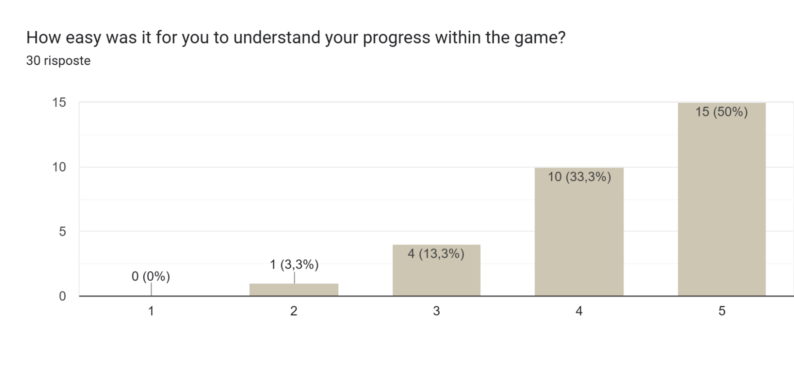
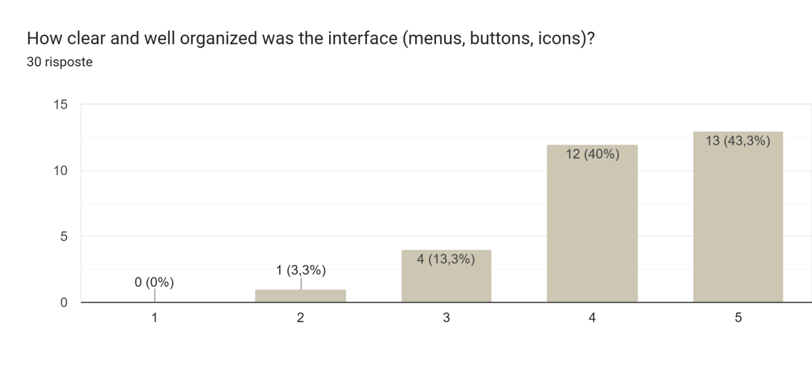
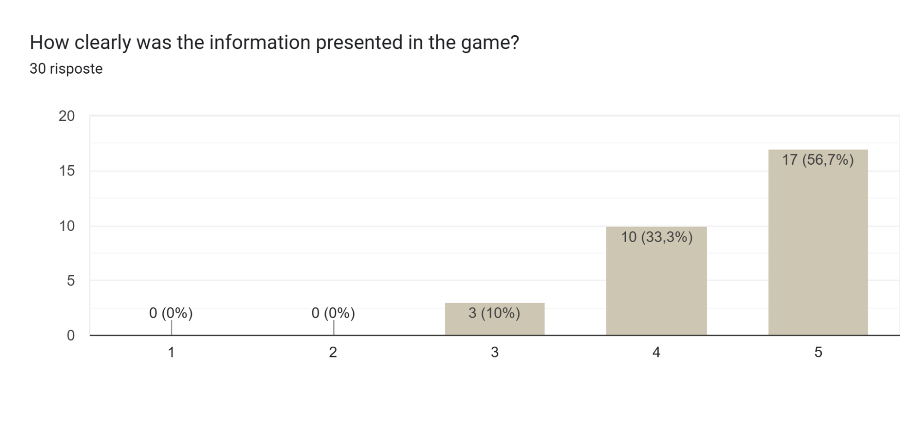
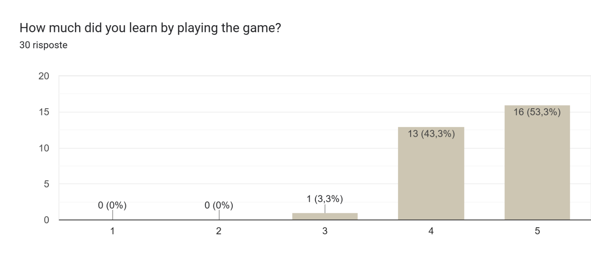
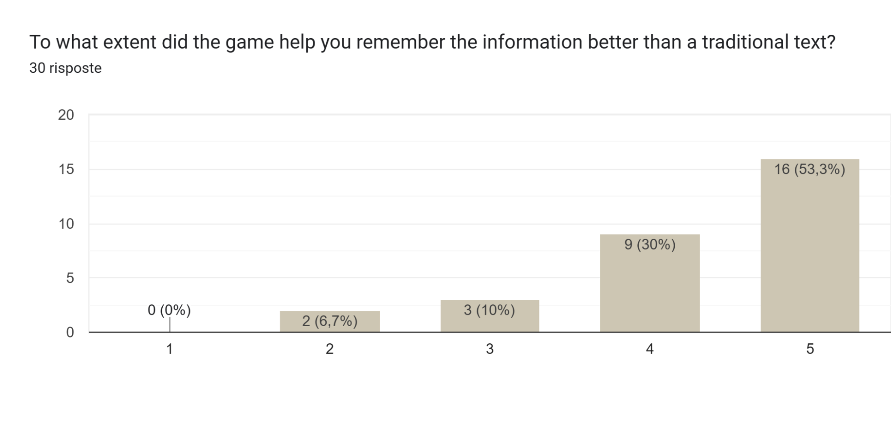
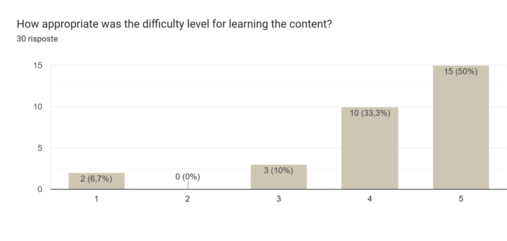
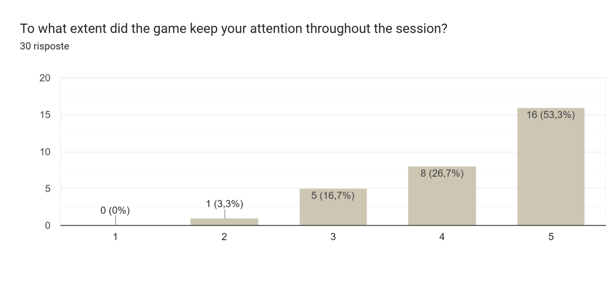
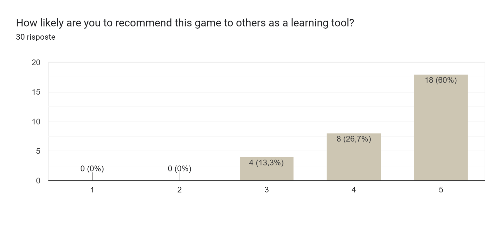
Test n°3
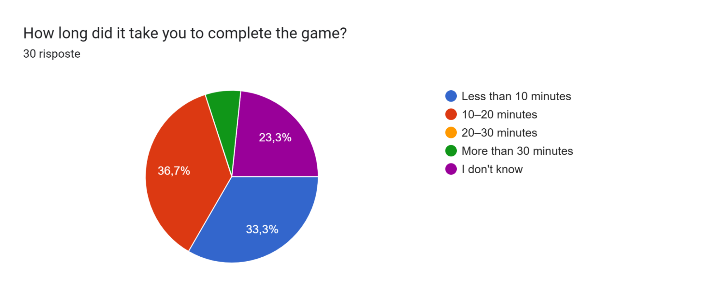
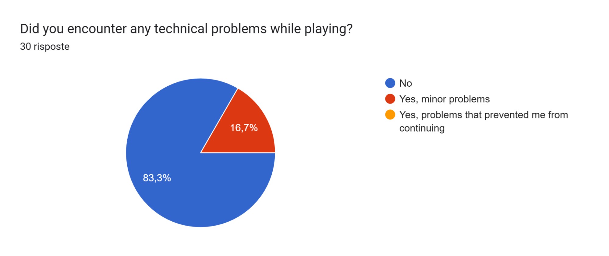
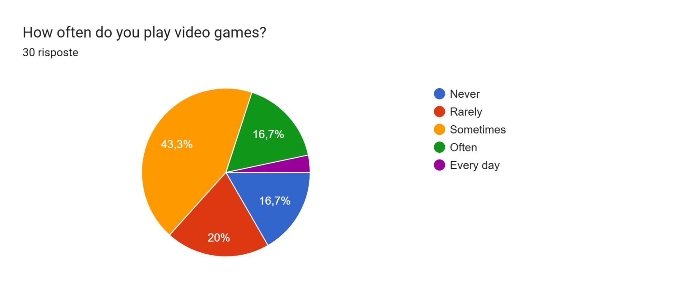
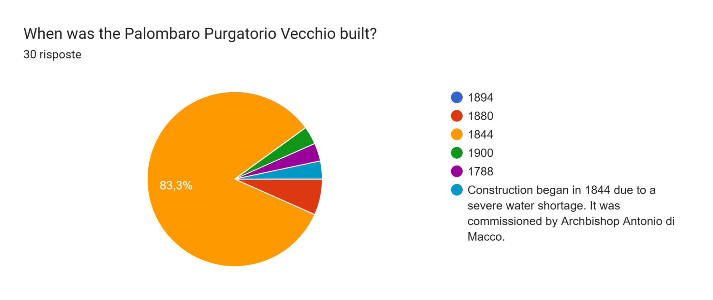
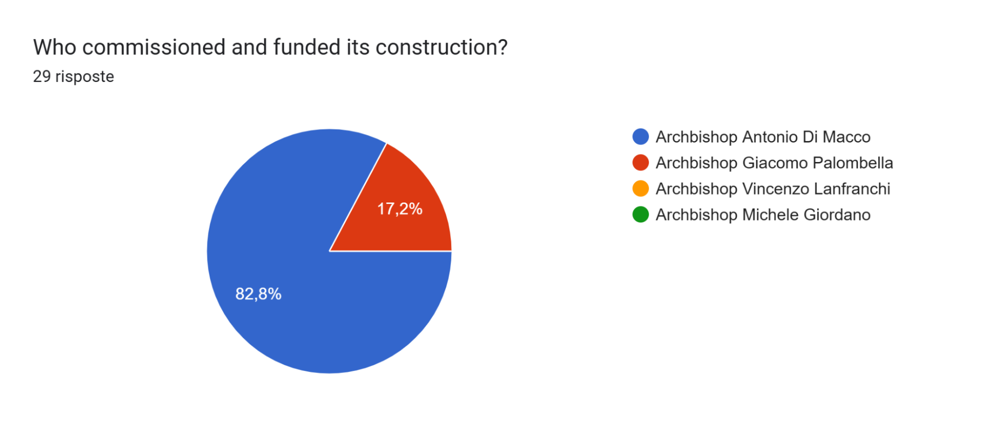
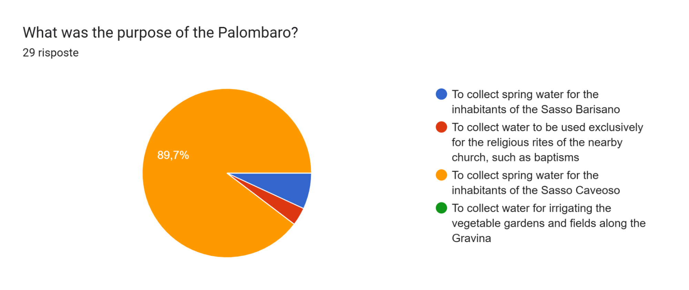
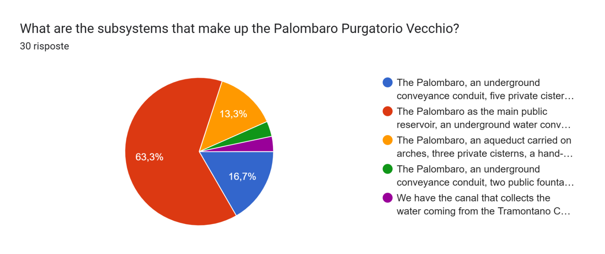
Feedback e Valutazioni
"Waterman è la personificazione dell’acqua che arriva alle persone del Sasso Caveoso, il gioco è chiamato così per far capire già dall’inizio lo scopo dello stesso.è la goccia d'acqua che arriva alle famiglie del sasso caveoso"
"Waterman rappresente l'acqua come risorsa indispensabile. Si chiama così perché il gioco ci mostra come i Sassi di Matera convogliavano e distribuivano l'acqua."
"waterman is the main character and hence the game is named after him.The man made of water, whose task is not only to explore new environments relating to water reserves but, above all, to encourage people to reflect on just how important water is for an entire community Waterman represents a drop of water falling from the sky into the Pallombaro Purgatorio Vecchio, intent on fulfilling its mission: to be brought back to the surface and quench the thirst of the inhabitants of the Sasso Caveoso."
"Waterman ...."